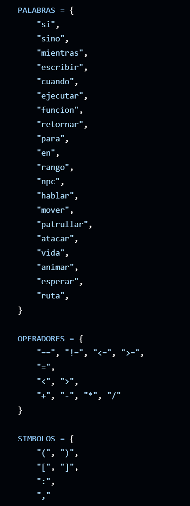
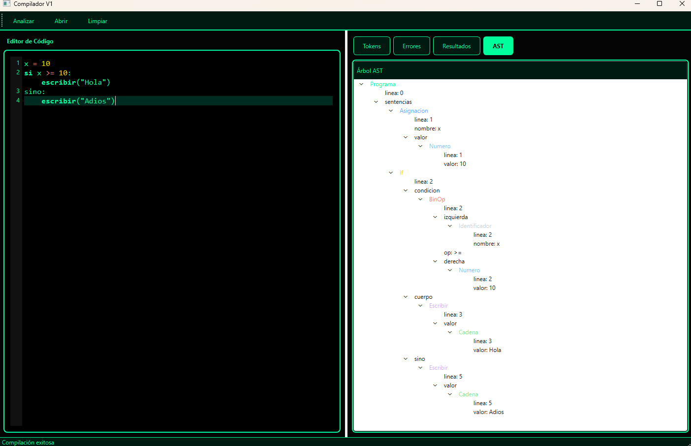

Lenguajes Formales y de Programación
Autores: Arturo Alva y Landy Monzón
Este proyecto implementa un compilador completo con análisis léxico, sintáctico y semántico, incluyendo una extensión para NPCs.
x = 10
si x > 5:
escribir(x)
El código se convierte en tokens.

Se construye el AST.

Se valida la lógica del programa.
npc guardia:
hablar("Guardia", "Alto")